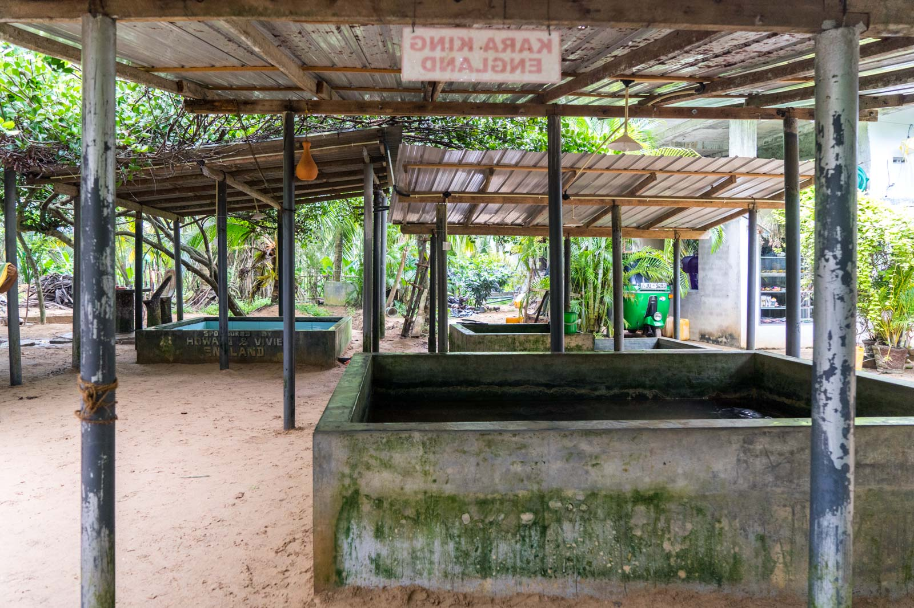

Kosgoda Turtle Hatchery
On the south coast of Sri Lanka, turtles have laid their eggs for generations.
Swimming in from the Indian Ocean,
they drag themselves up the sand on the beaches near the city of Galle and dig their nests,
where they leave the eggs.
Weeks later, their babies should hatch and make their way down to the coastline and into the water.
Not all baby turtles survive.
In fact, the natural survival rate of newborn turtles around the world is normally around five per cent.
This is all part of a balanced ecosystem, though.
Turtles usually lay more than a hundred eggs,
so enough make it through to keep the species going.
The rest become food for predators, which helps those species survive.
As is often the case, though, there's one species that is ruining it all. Humans.
Kosgoda Turtle Hatchery, Galle, Sri Lanka
The turtles that lay their eggs on the Sri Lankan beaches are under threat because of human activity - and they have been for decades.
But in more recent times, there have been some conservation efforts to try to address the crisis.
One of these efforts is the Kosgoda Turtle Hatchery.
It was started almost 40 years ago and is still going today.

This video will show you how they work here!
The centre functions mainly as a hatchery and makes huge efforts to increase the rate of hatching, and survival of baby turtles in their very initial stages. However the Care centre also works on sick or injured adults; treating them and releasing them back into the ocean. They also run volunteer programs and awareness programs for local and international visitors.